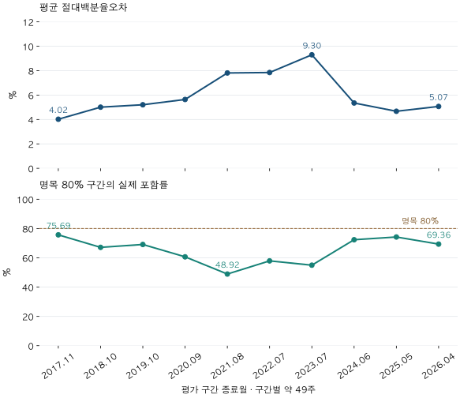

아파트 가격표 읽기 · 모형의 오차와 한계
아파트 시세 추정 정확도: 평균 오차 5.68%를 어떻게 읽어야 할까?
자체 매매 시세 모형의 시간순서 평가에서 평균 오차, ±10% 이내 비중, 80% 구간 포함률을 비교합니다. 근거가 오래된 집과 시기별 차이, 실시간 예측으로 읽을 수 없는 한계를 확인하세요.
분석 기간 · 2016년 12월 9일~2026년 4월 30일 평가 계약 | 보유 자료 스냅샷 생성 · 2026-10-04
아파트 시세 추정값이 10억 원이라고 나오면, 실제 계약도 그 근처에서 이뤄질까요? ‘정확도 95%’ 같은 한 숫자를 보기 전에 무엇을 정답으로 삼았고, 언제의 정보로 계산했는지 확인해야 합니다. 파파펭귄의 자체 매매 모형을 과거 계약과 비교해 오차의 크기와 흔들림을 살펴봅니다.
추정가격은 어떤 거래와 비교했나요?
대상은 자체 매매 모형 v7입니다. 국토부 실거래자료를 바탕으로 단지·전용면적 유형별 가격을 계산하며, KB시세나 다른 회사의 AI 추정가를 평가한 글이 아닙니다. 모형은 통상층에 해당하는 거래를 선별하지만 향·수리·동·조망까지 같은 개별 집을 맞추지는 못합니다.
각 계약이 속한 주가 시작되기 전, 직전 완료 목요일의 추정값과 그다음 주의 단지·면적 유형별 첫 적격 계약을 비교했습니다. 그 계약을 반영한 뒤의 추정값을 같은 계약과 비교하지 않습니다. 평가 대상은 서울·수집 경기 지역의 1,076,935행, 15,044개 단지이며 계약일은 2016-12-09~2026-04-30입니다.
한 단지에서 같은 주에 여러 면적의 평가 행이 생기면 가중치를 나눠 단지·주차마다 합계 1로 맞췄습니다. 합계는 896,481단지·주차입니다. 거래가 많은 단지가 같은 주에 여러 표를 갖는 영향을 줄이는 방식입니다. 전체 실거래를 한 건씩 센 비중, 단지마다 기간 전체에서 한 표를 준 비중, 전체 주택의 비중과는 다릅니다.
또한 추정값과 비교 가능한 계약이 있는 표본입니다. 거래가 없거나 사전 추정이 지원되지 않는 집의 오차까지 평가한 것은 아닙니다. 가격의 종류부터 정리하려면 실거래가·호가·시세의 차이를 먼저 확인하세요.
‘오차 5.68%’와 ‘±10% 이내 84.95%’는 무엇이 다른가요?
각 행에서 |추정값 ÷ 관측값 − 1| × 100을 계산한 뒤 가중평균했습니다. 두 가격은 동일한 전용면적 단위로 맞춥니다. 가령 실제 관측 가격이 10억 원이고 추정값이 9억 원이면 오차는 10%입니다. 반대로 실제가 9억, 추정이 10억이면 11.11%입니다. 분모가 실제 관측값이기 때문입니다. 이 금액은 계산을 설명하는 가상 예시입니다.
평균은 오차의 크기를 요약하지만 큰 오차가 얼마나 자주 생기는지는 별도로 봐야 합니다. 아래 ±5·10·20%는 각 행의 실제 가격 대비 절대오차가 그 범위 이내인 가중 비중입니다. 포함 관계가 있는 누적 비중이므로 세 수를 더하지 않습니다.
| 비교 조건 | 평가 행 | 단지 수 | 평균 절대오차 (%) | ±5% 이내 비중 (%) | ±10% 이내 비중 (%) | ±20% 이내 비중 (%) | 80% 구간 포함률 (%) |
|---|---|---|---|---|---|---|---|
| 전체 | 1,076,935 | 15,044 | 5.68 | 62.24 | 84.95 | 95.85 | 65.56 |
±5% 안에는 62.24%, ±10% 안에는 84.95%, ±20% 안에는 95.85%가 들어왔습니다. 따라서 ±20%를 넘는 오차도 가중 비중으로 4.15% 남습니다. 평균 5.68%를 개별 매물의 최대 오차나 ‘94.32% 정확도’로 바꾸면 안 됩니다.
마지막 열은 다른 질문입니다. 모형이 내놓은 명목 80% 가격구간에 관측 가격이 들어왔는지를 셉니다. 실제 포함률 65.56%는 이 표본에서 명목 수준에 미달합니다. 구간 이름이 80%라고 해서 내 계약가격이 그 안에 들어올 확률을 80%로 보장하지 않습니다. ±10% 고정 오차 범위와도 다른 구간입니다.
같은 모형도 시기에 따라 오차가 달랐나요?
기존 평가 설계의 약 49주 구간 10개를 빠짐없이 비교했습니다. 달력연도별 통계가 아니며, 그림의 날짜는 구간의 종료월입니다. 각 구간 안에서도 모형은 앞선 주의 정보를 받아 순차 갱신합니다. 49주 뒤 가격을 한 번에 예측하는 실험이 아닙니다.

| 비교 조건 | 평가 행 | 단지 수 | 평균 절대오차 (%) | ±5% 이내 비중 (%) | ±10% 이내 비중 (%) | ±20% 이내 비중 (%) | 80% 구간 포함률 (%) |
|---|---|---|---|---|---|---|---|
| 2016-12-09 ~ 2017-11-16 | 142,192 | 10,408 | 4.02 | 73.65 | 92.72 | 98.70 | 75.69 |
| 2017-11-17 ~ 2018-10-25 | 139,136 | 10,608 | 5.01 | 65.06 | 87.52 | 97.59 | 67.14 |
| 2018-10-26 ~ 2019-10-03 | 92,709 | 9,821 | 5.21 | 63.28 | 87.05 | 97.37 | 69.11 |
| 2019-10-04 ~ 2020-09-10 | 169,875 | 11,305 | 5.64 | 60.63 | 85.34 | 96.60 | 60.67 |
| 2020-09-11 ~ 2021-08-19 | 129,235 | 11,076 | 7.81 | 47.99 | 73.70 | 92.16 | 48.92 |
| 2021-08-20 ~ 2022-07-28 | 46,466 | 8,708 | 7.85 | 50.73 | 75.05 | 91.17 | 57.91 |
| 2022-07-29 ~ 2023-07-06 | 50,258 | 7,734 | 9.30 | 48.05 | 69.20 | 85.73 | 54.97 |
| 2023-07-07 ~ 2024-06-13 | 80,500 | 9,119 | 5.35 | 64.82 | 86.89 | 96.18 | 72.35 |
| 2024-06-14 ~ 2025-05-22 | 102,781 | 9,745 | 4.67 | 69.20 | 90.08 | 97.51 | 74.22 |
| 2025-05-23 ~ 2026-04-30 | 123,783 | 10,409 | 5.07 | 65.99 | 88.48 | 97.18 | 69.36 |
평균 절대오차는 2016-12-09~2017-11-16의 4.02%에서, 2022-07-29~2023-07-06에는 9.30%로 커졌습니다. 가장 최근 평가 구간인 2025-05-23~2026-04-30은 5.07%입니다. 다만 구간마다 거래가 생긴 단지·면적·가격대가 달라졌으므로 차이를 시장 급변 하나의 효과로 설명할 수는 없습니다.
명목 80% 구간 포함률은 10개 구간 모두 80%보다 낮았습니다. 특히 2020-09-11~2021-08-19에는 48.92%였습니다. 전체 평균만 보는 것보다, 내가 참고하려는 시점과 비슷한 조건에서도 성적이 유지되는지 확인해야 하는 이유입니다. 이 자료는 2026년 4월까지이므로 발행 시점인 10월의 성능을 측정했다고 읽어서도 안 됩니다.
마지막 근거가 오래됐거나 다른 면적에서 가져온 가격이라면요?
마지막 가격 근거가 지난 주수
| 비교 조건 | 평가 행 | 단지 수 | 평균 절대오차 (%) | ±5% 이내 비중 (%) | ±10% 이내 비중 (%) | ±20% 이내 비중 (%) | 80% 구간 포함률 (%) |
|---|---|---|---|---|---|---|---|
| 0~3주 | 635,029 | 10,288 | 4.13 | 71.30 | 92.50 | 99.00 | 63.92 |
| 4~12주 | 245,274 | 10,915 | 5.27 | 61.07 | 86.51 | 97.87 | 68.67 |
| 13~25주 | 90,361 | 10,982 | 7.13 | 48.79 | 75.83 | 94.61 | 68.96 |
| 26주 이상 | 106,271 | 14,482 | 13.49 | 28.47 | 49.63 | 76.00 | 64.61 |
근거 경과가 0~3주인 표본의 평균 절대오차는 4.13%, 26주 이상인 표본은 13.49%였습니다. 후자는 ±10% 안에 들어온 비중도 49.63%에 그쳤습니다. 이번 표본에서 오래된 근거와 큰 오차가 함께 나타났다는 뜻입니다. 같은 집을 기다렸을 때 오차가 이만큼 증가한다는 인과효과는 아닙니다. 다른 면적을 이용한 추정에서는 그 면적의 근거 나이입니다.
서울과 수집 경기의 차이
| 비교 조건 | 평가 행 | 단지 수 | 평균 절대오차 (%) | ±5% 이내 비중 (%) | ±10% 이내 비중 (%) | ±20% 이내 비중 (%) | 80% 구간 포함률 (%) |
|---|---|---|---|---|---|---|---|
| 서울 | 382,569 | 8,499 | 6.32 | 59.60 | 82.21 | 94.24 | 67.10 |
| 수집 경기 | 694,366 | 6,545 | 5.34 | 63.69 | 86.45 | 96.73 | 64.72 |
서울의 평균 절대오차는 6.32%, 수집 경기는 5.34%였습니다. 거래와 단지 구성, 근거의 경과 주수 등이 다르므로 ‘경기에서는 언제나 더 정확하다’는 결론을 낼 수 없습니다. 서울·경기를 합친 평균도 두 지역의 단순 평균이 아닙니다.
같은 면적의 근거가 없을 때
| 비교 조건 | 평가 행 | 단지 수 | 평균 절대오차 (%) | ±5% 이내 비중 (%) | ±10% 이내 비중 (%) | ±20% 이내 비중 (%) | 80% 구간 포함률 (%) |
|---|---|---|---|---|---|---|---|
| 같은 면적의 직접 근거 | 1,075,067 | 15,044 | 5.68 | 62.29 | 84.99 | 95.86 | 65.52 |
| 같은 단지 다른 면적 근거 | 1,868 | 1,224 | 9.82 | 35.58 | 63.86 | 89.38 | 88.33 |
같은 단지의 다른 면적에서 근거를 가져온 1,868행의 평균 절대오차는 9.82%로 직접 근거의 5.68%보다 컸습니다. 그런데 80% 구간 포함률은 오히려 88.33%로 높았습니다. 대체 추정에는 더 넓은 불확실성 범위를 적용하므로, 포함률이 높다는 사실만으로 중심 가격이 더 정확하다고 할 수 없습니다. 두 표본의 조건도 다르며 면적 보정계수는 사후 자료에서 고정돼 있습니다.
이 정도면 시세 모형을 믿지 말아야 하나요?
가장 설득력 있는 반론은 실거래가격도 표준주택의 유일한 정답은 아니라는 것입니다. 같은 단지·비슷한 면적이라도 층·수리·조망·협상·입주 조건이 다르고, 모형이 설명하려는 기준 주택과 실제 거래가 완전히 같지 않습니다. 따라서 거래와의 차이를 모두 모형의 실패로 볼 수는 없습니다.
그렇다고 평균 오차가 작다는 이유로 개별 매물의 조건을 생략할 수도 없습니다. 거래 공백을 메우는 참고값으로는 쓸 수 있어도, 실제 협의 가격의 오차 한도나 매수·매도 신호를 보장하지 않습니다. 가격구간을 넓히면 포함률을 올릴 수 있지만 의사결정에 쓸 만한 범위인지가 별도 문제입니다. 모형의 ‘신뢰도 점수’ 역시 적중 확률이 아닙니다.
또 하나의 큰 한계는 당시 실제로 알 수 있었던 자료를 완전히 재현하지 못했다는 점입니다. 여기서는 현재 보유한 정정·해제 반영 자료를 계약일 순서로 다시 계산했습니다. 당시 신고가 언제 들어왔는지, 어떤 정정 전 자료가 보였는지는 복원하지 않았습니다. 면적 구조계수와 단지 정보도 사후 고정 자료입니다. 반복 검토한 연구 표본이므로 처음 보는 미래 표본의 검증 성적도 아닙니다.
과거 자료만 앞에 두는 시간 순서 평가는 미래 자료가 과거의 답에 섞이는 문제를 줄이기 위한 기본 원칙입니다. Forecasting: Principles and Practice의 시계열 교차검증 설명도 이 원칙을 다룹니다. 그러나 계약일을 과거로 제한하는 것과 실제 정보 도착 시점을 지키는 것은 다릅니다. 신고 지연과 집계 시점을 함께 확인하세요.
관심 매물의 추정값을 보기 전에 확인할 다섯 가지
- 가격의 대상:내가 보는 집인가, 단지·전용면적의 표준 조건인가?
- 근거 날짜:화면 갱신일과 마지막 실제 거래 근거의 날짜가 다른가?
- 근거의 출처:같은 면적의 관측인가, 다른 면적에서 옮겨온 값인가?
- 검증의 분모:어느 기간·지역·주택이 포함됐고, 지원되지 않는 집은 빠졌나?
- 오차와 범위:평균 외에 큰 오차의 비중과 실제 구간 포함률을 제시하나?
5.68%를 관심 매물 가격에 곱해 안전한 협상 폭이나 대출 여유액으로 사용하지 마세요. 모형값과 실제 비교 거래, 매물 상태, 아직 확인하지 못한 조건을 따로 적는 편이 판단 근거를 더 분명하게 만듭니다.
자료·검증·계산 방법 자세히 보기
- 모형과 원천:자체 매매 모형 sale_transfer_evidence_v7, 2026-10-04 생성 자료의 기존 시간순서 평가를 재현했습니다. 적격 매매는 명시적 해제·직거래·충돌 거래 등을 제외하되, 중개·해제 상태 미상은 각각 중개·활성으로 가정합니다. 층 미상은 제외하며 관측 최고층 6층 초과 단지는 4층 이상, 6층 이하 단지는 전체 층을 사용합니다. 관측 최고층은 실제 건물 높이와 다를 수 있고 과거 당시의 정보가 아닙니다.
- 평가 선택:단지·전용면적 유형·주차별 첫 적격 계약과 직전 완료 목요일의 추정을 비교했습니다. 10개 순차 평가 구간의 매매 전체 적격 비교 행을 사용했습니다. 구간 보정 후보가 지원하는 행으로 분모를 줄이지 않았습니다. 다만 사전 추정이나 비교 계약이 없는 집의 지원율은 이 분모에서 알 수 없습니다.
- 시간 구분:기존 연구는 앞선 자료를 학습, 다음 4주를 선택 검증, 이후 약49주를 평가에 두고 경계마다1주 공백을 둡니다. 이 글은 그 설계의 평가 행에 저장된 기존 중심값·구간을 읽었고 새 모형이나 보정 후보를 학습하지 않았습니다. 공백은 구간 보정 학습 경계에 적용하며, 중심 추정값은 매주 그 이전의 관측으로 갱신됩니다. 기존 보정 후보는 승격되지 않았습니다.
- 계산:전용평당 가격의 로그 추정과 로그 관측 차이를 각 행에서 지수변환해 실제값 분모 오차를 계산했습니다. 평균절대로그오차도 JSON에 별도로 남겼으며 이를 백분율오차와 혼용하지 않았습니다. 80% 구간은 기존 연구의 정규분위수 약1.28155와 저장된 표준편차를 사용했습니다.
- 가중·조건:단지·주차 가중치는 전체 표본에서 계산하고 하위 조건에서도 유지했습니다. 조건별 단지 수는 중복될 수 있으므로 합산하지 않습니다. 수치 공개에는200행·30단지 이상을 요구했고19개 집계 모두 충족했습니다. 거래별 독립성을 가정한 신뢰구간은 제시하지 않습니다.
- 재현:평가 행의 대상 집합·추정·관측·표준편차·시점·버전을 별도 재생 기록과 대조했습니다. 미래 주차·중복·유효하지 않은 값이 없음을 확인하고19개 집계를 SQL와Python으로 각각 계산했습니다. 기존 보고 집계와 겹치는 지표도 대조했으며 입력 파일의 지문·해시는 전후 일치했습니다. 같은 원천을 이용한 재현으로, 원천 오류나 실시간 예측 성능을 외부 검증한 것은 아닙니다.
- 공개 범위:반올림 전 공개 집계JSON만 제공합니다. 개별 계약·단지 식별자·모형 파일은 공개하지 않습니다. 전세와 월세는 평가 대상 조건이 달라 이 글의 결론을 적용하지 않습니다.
분석·집필:파파펭귄 (Nobot Kang). 에이전트로 근거 대조·계산 검증·초안 검토를 보조했습니다. 방법론 확인일:2026-10-10. 기존 연구 결과를 본 뒤 재현한 진단이며 새 독립 확증 연구가 아닙니다.